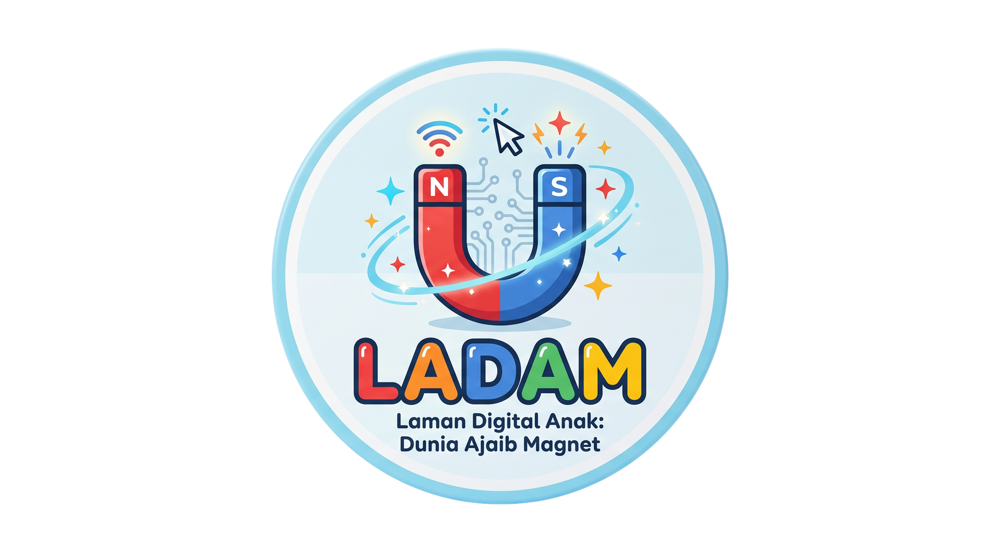
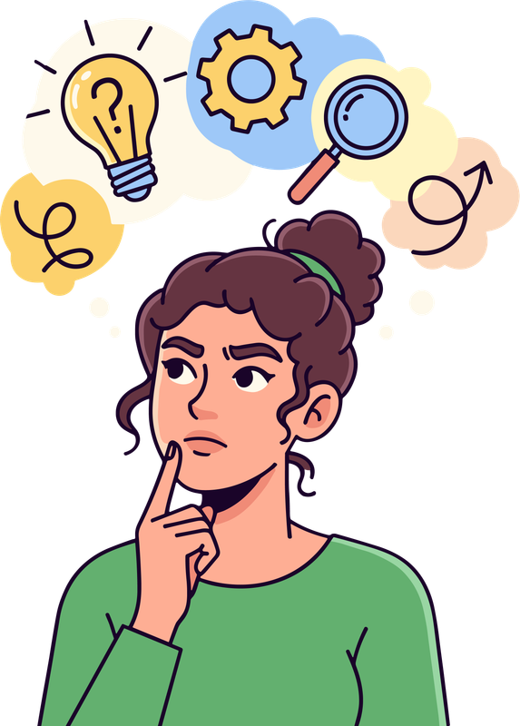
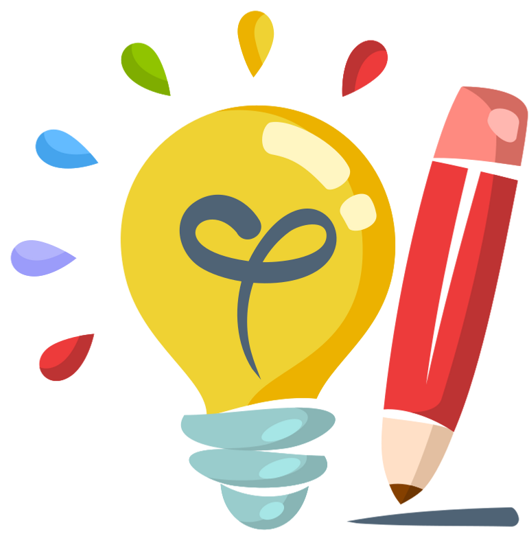

Tentang LADAM

Bahan ajar LADAM (Laman Digital Anak: Dunia Ajaib Magnet) adalah media interaktif berbasis website untuk IPAS SD yang dikembangkan dengan pendekatan Desain Universal untuk Pembelajaran (DUP). Pembaruan utamanya terletak pada sajian materi yang inklusif dan fleksibel (memadukan teks minimalis, visual cerah, dan multimedia) sehingga memberikan kebebasan bagi siswa untuk mengatur alur belajarnya sendiri dan mengakomodasi berbagai gaya belajar di luar format buku teks konvensional.
Selain itu, bahan ajar ini dirancang untuk mewujudkan Pembelajaran Mendalam (Deep Learning) dengan mengaitkan konsep abstrak kemagnetan langsung pada konteks kehidupan sehari-hari. Melalui pembaruan berupa integrasi fitur observasi mandiri dan evaluasi formatif di dalam situs, LADAM mendorong siswa menjadi penjelajah aktif yang mampu berpikir kritis dan membangun pemahaman sains secara bermakna dan menyenangkan.
Capaian & Tujuan Pembelajaran
Murid mampu menjelaskan pengertian, sifat-sifat, jenis dan manfaat gaya magnet melalui pengamatan atau percobaan sederhana dalam kehidupan sehari-hari.
Melalui kegiatan pengamatan, murid dapat menguraikan pengertian gaya magnet dan sifat-sifat magnet dengan tepat
Melalui eksplorasi, murid dapat mengidentifikasi jenis-jenis gaya magnet dan manfaatnya dalam kehidupan sehari-hari dengan benar
Melalui aktivitas diskusi, murid dapat menunjukkan sikap bergotong royong, tanggung jawab, dan bernalar kritis
Melalui media "....", murid mampu membangun pemahamannya terhadap topik menyelidiki gaya magnet dengan percaya diri secara mandiri

Penalaran Kritis
Mengidentifikasi dan menganalisis sifat-sifat, jenis, dan manfaat gaya magnet melalui kegiatan pengamatan dan diskusi
Kolaborasi dan Kepedulian
Murid saling bekerja sama dalam kelompok (bersama teman maupun orang tua) untuk berdiskusi, menyelesaikan LKM/PD mengenai topik gaya magnet

Kreativitas
Murid menuangkan pemahamannya tentang gaya magnet dalam bentuk laporan sederhana, gambar/poster, LKM, atau video demonstrasi sederhana.
Kemandirian
Murid menunjukkan tanggung jawab dalam menyelesaikan tugas individu dan berkontribusi aktif dalam kerja tim